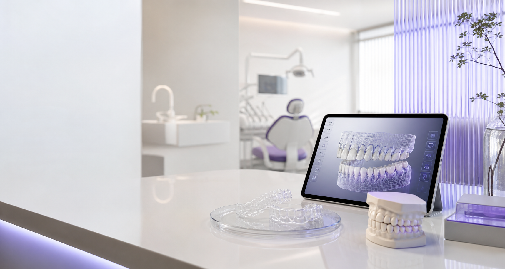

진단이 먼저입니다
인비절라인, 브라켓, 부분교정 중 무엇이 좋은지보다 “지금 교정이 필요한 상태인가”를 먼저 봅니다.
연세대학교 치과대학병원 출신 교정과 전문의 강성태. 첫 상담부터 유지장치까지, 원장이 직접 진단하고 직접 치료합니다.
인비절라인 퍼플 다이아몬드 · 케이스 수 기반 공급자 등급

좋은 교정은 장치를 먼저 정하지 않습니다. 얼굴, 치아, 잇몸, 성장, 생활 패턴, 유지 가능성까지 본 뒤 치료가 필요한 이유와 한계를 먼저 설명합니다.
인비절라인, 브라켓, 부분교정 중 무엇이 좋은지보다 “지금 교정이 필요한 상태인가”를 먼저 봅니다.
상담, 치료 계획, 장치 선택, 중간 점검, 유지장치 관리까지 강성태 원장이 직접 확인합니다.
예상 변화와 함께 치아 뿌리, 잇몸, 턱관절, 협조도에 따른 한계를 솔직하게 안내합니다.
교정과 전문의는 치과대학 졸업 후 교정만을 전문으로 추가 수련을 받습니다. 그 차이를 환자분이 이해하실 수 있게 설명합니다.
대진의·페이닥터 없이, 강성태 원장이 첫 상담부터 마지막 유지장치까지 직접 담당합니다.
충치·임플란트·미백은 진료하지 않습니다. 교정 한 분야에만 집중합니다.
3D 스캔과 디지털 시뮬레이션으로 치료 방향을 미리 확인하고 시작합니다. (결과는 개인차가 있습니다)
환자가 검색하는 말과 실제 진단명은 다를 수 있습니다. 상담 전에는 아래 기준으로 먼저 방향을 잡아볼 수 있습니다.
총생은 공간 부족, 치아 크기, 악궁 형태를 함께 봅니다. 가벼운 배열은 인비절라인이 가능하지만, 심한 총생은 브라켓이나 발치 여부를 함께 검토합니다.
인비절라인 기준 보기치아성 돌출인지 골격성 돌출인지에 따라 접근이 달라집니다. 발치, 비발치, 치간삭제, 교정 후 입술 변화까지 설명합니다.
브라켓 교정 보기공간의 원인이 치아 크기인지, 잇몸·교합 문제인지 확인합니다. 부분교정이 가능한 경우와 전체교정이 필요한 경우를 구분합니다.
검사 예약하기7세 전후 검사는 “바로 시작”이 아니라 적기 판단을 위한 확인입니다. 턱 성장, 맹출, 습관, 얼굴 비대칭을 봅니다.
성장기 교정 보기성인·중장년 교정은 잇몸 상태와 보철 계획이 중요합니다. 치아 이동 범위와 유지 가능성을 현실적으로 안내합니다.
성인 교정 상담투명장치가 좋은 선택일 수 있지만 모든 케이스에 맞지는 않습니다. 착용 시간, 치아 이동 난이도, 생활 패턴까지 함께 봅니다.
적합 기준 보기어떤 교정이 맞을지, 검사와 상담을 통해 함께 정합니다.


교정 장치는 목적지가 아니라 도구입니다. 같은 인비절라인이라도 계획이 다르면 결과가 달라지고, 같은 브라켓이라도 조절 방식이 다르면 과정이 달라집니다.
| 구분 | 잘 맞는 경우 | 상담 때 확인할 것 | 연세바로의 설명 방식 |
|---|---|---|---|
| 인비절라인 | 심미성이 중요하고 착용 시간을 지킬 수 있는 경우 | 난이도, 발치 여부, ClinCheck 설계 방향 | 원장이 직접 시뮬레이션을 보며 가능 범위와 한계를 설명 |
| 브라켓 교정 | 복잡한 치아 이동, 발치, 정밀 조절이 필요한 경우 | 장치 종류, 위생 관리, 내원 주기 | 메탈·세라믹·자가결찰의 장단을 케이스 기준으로 비교 |
| 부분 교정 | 앞니 배열 등 제한된 범위의 개선이 가능한 경우 | 전체 교합 문제, 재발 가능성, 치료 범위 | 부분으로 가능한지, 전체교정이 더 맞는지 솔직하게 구분 |
| 성장기 교정 | 턱 성장, 맹출, 습관 문제를 조기에 봐야 하는 경우 | 현재 시작할지, 관찰할지, 2차 교정 가능성 | 일찍 시작하는 것보다 효과가 큰 시점을 먼저 판단 |
지금 치료가 최선이 아니면 관찰을 권할 수 있습니다.
인비절라인과 브라켓을 장점만이 아니라 한계까지 비교합니다.
교정 종료 후 유지장치와 재발 가능성까지 처음 상담에서 설명합니다.
“교정치료는 결과도 중요하지만, 과정이 투명해야 한다고 생각합니다. 궁금한 게 있으면 뭐든 물어보세요.”원장 자세히 보기
교정은 긴 치료입니다. 시작 전 이해가 부족하면 치료 중 불안이 커집니다. 그래서 상담에서는 장점보다 판단 기준을 먼저 설명합니다.
단순히 예뻐지는 문제가 아니라, 치아 배열과 교합이 어떤 문제를 만들 수 있는지부터 확인합니다.
공간 부족, 입술 돌출, 치아 뿌리 방향, 얼굴 균형을 함께 보고 발치·비발치의 이유를 설명합니다.
난이도, 치아 이동량, 성장, 협조도, 내원 간격에 따라 기간이 달라질 수 있음을 먼저 안내합니다.
교정은 끝나는 날보다 유지가 중요합니다. 유지장치 착용과 관리 계획까지 상담에 포함합니다.
3D 구강 스캔 · 파노라마 · 측모두부 방사선 촬영.
디지털 시뮬레이션으로 방향을 확인하고, 원장이 직접 설명합니다.
단계별 내원. 체크업마다 강성태 원장이 직접 확인합니다.
치료 완료 후 유지장치·리텐션 관리까지 책임집니다.
현재 고민, 이전 치료 경험, 원하는 장치, 걱정되는 점을 정리해 오시면 진단 설명이 더 정확해집니다.
구강 상태와 얼굴 균형을 보고, 필요한 검사와 가능한 치료 방향을 원장이 직접 설명합니다.
3D 스캔과 방사선 자료를 바탕으로 치아 이동 방향, 예상 기간, 장치 선택 기준을 확인합니다.
내원마다 진행 상황을 확인하고, 계획과 다른 변화가 있으면 이유와 조정 방향을 설명합니다.
유지장치 착용, 정기 점검, 재발 가능성을 관리합니다. 교정 결과는 유지가 함께 가야 오래 갑니다.
인비절라인은 연간 치료 케이스 수에 따라 공급자 등급을 부여합니다. 강성태 원장은 퍼플 다이아몬드 등급으로, 수년간 쌓아온 임상 경험이 교정 설계에 담겨 있습니다.
공급자 등급은 경험을 보여주는 하나의 참고 자료입니다. 실제 치료에서는 ClinCheck 설계, 착용 시간, 치아 이동 반응, 중간 조정이 더 중요합니다.
치아 이동 순서와 목표를 원장이 직접 확인하고 수정합니다.
투명장치가 맞지 않는 경우 브라켓 또는 다른 계획을 안내합니다.
장치가 좋아도 착용 시간이 부족하면 결과가 달라질 수 있음을 설명합니다.
계획과 실제 이동 차이를 확인하고 필요한 경우 추가 장치를 설계합니다.
※ 인비절라인 공급자 등급은 치료 경험에 대한 지표이며, 특정 치료 결과를 보장하지 않습니다.
실제 치료 사례를 통해 교정의 변화를 보여드립니다. 개원 후 의료광고 사전심의를 거친 사례로 업데이트됩니다.
총생 · 인비절라인
전치부 돌출 · 브라켓
성장기 교정
앞니 공간 · 부분교정
경미한 돌출 · 인비절라인
개방교합 · 브라켓
공간 부족인지, 치아 크기 문제인지, 악궁 형태 문제인지에 따라 치료 방향이 달라집니다.
개별 사례는 참고 자료입니다. 구강 상태와 협조도에 따라 기간과 결과가 달라질 수 있습니다.
인비절라인, 브라켓, 부분교정 중 어느 쪽이 맞는지는 정밀 검사 후 판단합니다.
※ 본 사례는 의료광고 사전심의 후 게시되며, 치료 결과는 환자 개인의 상태에 따라 차이가 있을 수 있습니다.
네이버 플레이스 실제 후기로 연동됩니다. (개원 후 업데이트)
상담 때 원장님이 직접 시뮬레이션을 보여주면서 설명해 주셔서 믿음이 갔어요.
인비절라인 · 네이버 플레이스 후기
매번 원장님이 직접 봐주시니까 안심이 됩니다. 과정이 투명해요.
브라켓 교정 · 네이버 플레이스 후기
아이 교정 시기를 솔직하게 말씀해 주셔서 좋았습니다. 무리하게 권하지 않으세요.
성장기 교정 · 학부모 후기
※ 후기는 실제 게시 후 연동되며, 개인의 치료 경험으로 결과를 보장하지 않습니다.
교정은 검색할수록 더 헷갈릴 수 있습니다. 그래서 홈페이지 안에서도 질문형 콘텐츠를 계속 쌓아갈 수 있게 구성했습니다.
투명교정이 편하고 심미적인 장치인 것은 맞지만, 발치 케이스나 복잡한 치아 이동에서는 브라켓이 더 안정적인 경우도 있습니다. 장치보다 중요한 것은 진단입니다.
인비절라인 기준 보기전문의 자격, 직접 진료, 치료 계획 설명, 유지관리까지 확인해야 할 항목을 정리합니다.
치료 시기가 맞지 않거나, 기대한 변화가 교정으로 해결되기 어려운 경우에는 솔직하게 말씀드립니다.
나이보다 성장 단계와 부정교합 종류가 중요합니다. 검사는 적기를 알기 위한 첫 단계입니다.
무조건 비발치가 좋은 것이 아닙니다. 얼굴 균형과 공간 분석에 따라 발치가 더 안정적인 경우도 있습니다.
기간, 비용, 발치 여부, 장치 선택, 유지장치, 통증, 내원 주기를 미리 질문해 보세요.
치아는 원래 위치로 돌아가려는 성질이 있습니다. 유지관리는 치료의 마지막 단계가 아니라 결과를 지키는 과정입니다.
장치가 아무리 좋아도 착용 시간이 부족하면 계획대로 움직이지 않을 수 있습니다. 생활 패턴도 진단의 일부입니다.
앞니 배열만 보지 않고 전체 교합, 어금니 맞물림, 재발 가능성까지 확인해야 합니다.
치료가 끝난 뒤에도 치아는 움직일 수 있습니다. 유지장치는 결과를 지키기 위한 약속입니다.
디지털 교정 장비와 위생 동선을 갖춘 연세바로치과 네트워크의 진료 공간입니다.
※ 사진은 연세바로치과 네트워크의 진료 공간이며, 안양 지점은 개원 시 실제 공간 사진으로 업데이트됩니다.
교정은 장치를 제거하는 날 끝나는 치료가 아닙니다. 유지장치, 정기 점검, 재발 가능성 관리까지 계획에 포함되어야 합니다.
고정식·가철식 유지장치 착용 방법과 점검 주기를 안내합니다.
연세바로치과 네트워크에서 쌓은 교정 임상 경험과 유지관리 흐름을 안양 진료에 반영합니다.
치아 이동 후 생길 수 있는 변화와 환자 협조가 필요한 부분을 미리 설명합니다.
범계·평촌 생활권에서 내원하기 쉬운 예약 동선과 주차·대중교통 정보를 정리해 제공합니다.
표시된 연락처·예약 채널은 예시이며 개원 시 실제 정보로 연결됩니다.
| 평일 | 10:00 – 19:00 |
|---|---|
| 야간 진료 | 화 · 목 21:00까지 (예정) |
| 토요일 | 10:00 – 14:00 |
| 일 · 공휴일 | 휴진 |